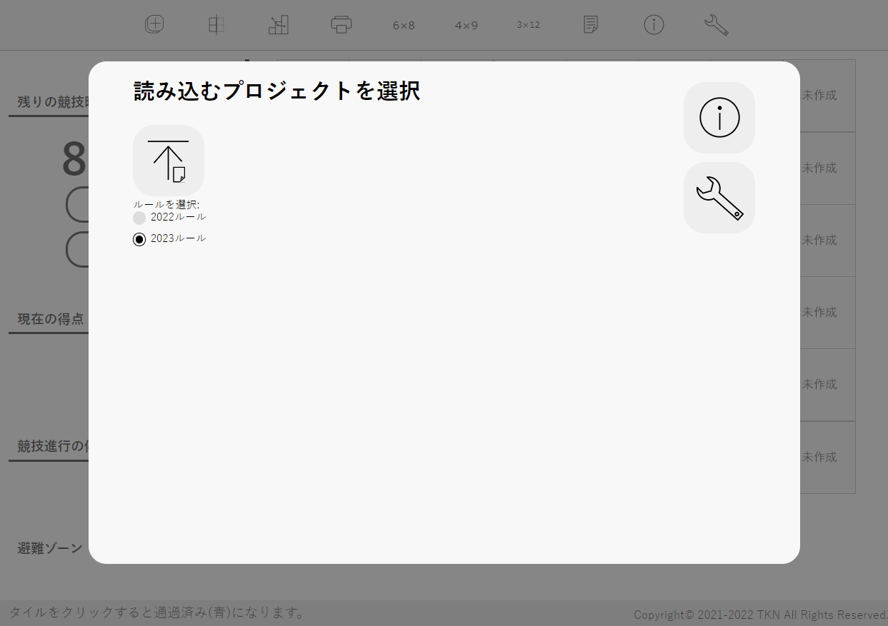

プロジェクトの読み込み
プロジェクトの読み込みコート作成で保存したプロジェクトファイル(NRL)を利用し、実際に競技を行いながら得点を算出できる機能です。
起動するとこのような画面が出ます。アイコンをクリックしてプロジェクトを読み込みます。
プロジェクトの読み込み任意のファイルを選ぶと得点計算を開始します。読み込むことができるファイルの拡張子は.rrlのみ(Safariでは.csvも可、ただしこのソフトウェアで作成されたもののみ)です。WRLのコートには対応していません。
 注意
注意※保存と読み込みは基本的に同じバージョンで行ってください。違うバージョンで行った場合正常に読み込まれないことがあります。メジャーアップデートでRRLファイルの内部構造が変わった場合、新しいバージョンでは古いバージョンのファイルをサポートします。メジャーバージョンが2つ以上古いファイルはサポートしません。その場合はファイル変換をご利用ください。
※下の表で「読み込み可能」となっている場合でも、読み込む側のバージョンよりファイルを作ったバージョンが新しい場合は読み込めませんのでご注意ください。
| 作成(コート作成) | ||||
| v1.0.0~v2.0.2 | v3.0.0~v3.1.1 | v4.0.0~v4.5.0 | ||
| 読み込み (NRL得点計算) | v4.1.0~ v4.5.0 | × | △ | ○ |
○…読み込み可能 △…読み込み可能だが非推奨 ×…ファイル変換が必要 - …不可能
 ヘルプボタン
ヘルプボタンヘルプを表示します。

得点計算のためのツールを実行するボタンやヘルプがあります。
競技の状況や、避難ゾーンの得点ボタンがあります。
現在のコートの状況を表示します。
得点計算に役立つガイドを表示します。

競技中の画面の一例。
「競技開始」を押すとタイマーがスタートし、無条件に5点加算されます。「競技終了」を押すとタイマーがストップします。もし競技が続行しているのに8分が経過した場合、競技を終了するようアラートが出ます。
オレンジ色に光っているものはハザードです。クリックすると詳細が表示され、「クリア」を押すと得点が加算されます。すでにクリアしている場合、ハザードは灰色に光ります。クリックすると「取り消し」ボタンが表示され、取り消すことができます。
1タイルに2つギャップがある場合、タイルをクリックすると2つ分の詳細が表示されます。先にロボットが通るほうが1つ目と考えて「クリア」を押してください。2つクリアした後は「取り消し」ボタンが1個のみ表示され、クリックすると2つ分が取り消されます。
傾斜路は1タイルごとに認識します。ただし連続している傾斜路は2タイルで10点と定められているので、その場合はどちらかのタイルでのみ「クリア」ボタンを押してください。
競技中、ロボットが通過した灰色のタイルをクリックすると青色に変化します。これは「通過済み」を表します。チェックマーカーがあるタイルをクリックすると、それまでの通過済みタイル数と競技進行の停止数(右クリックメニューで解説)から得られる点数を加算し、通過したタイルは白色になります。白色になったタイルのギャップ・傾斜路は、得点の変更ができなくなります。障害物、バンプは取り消し可能です。
ロボットが2回通過する十字路・十字ギャップは、2回とも同じ区間(スタートタイル・チェックマーカー～チェックマーカーの間)内であれば2回目の通過で青色が濃くなります。間違って2回押してしまった場合、もう1回押すと1回通過と同じ扱いになります。違う区間内で1回ずつ通過する場合は、1個目のチェックポイント通過では色が青色のまま据え置かれ、2回目の通過で青色が濃くなり、2個目のチェックポイント通過で白色になります。
②の「避難ゾーン」の部分にあるボタンを押せば、得点が加算されます。
③の灰色のタイルのどこかを右クリック(タッチデバイスでは長押し)すると右クリックメニューが表示されます。
このソフトウェア上でもチェックマーカーを追加できます。「チェックマーカーを置く」を押すとクリックしたタイルの右上にチェックマーカーが置かれます。ラインとかぶることがあります。「チェックマーカーを取る」で削除できます。
通過の取り消し
誤ってロボットが通過していないタイルをクリックしてしまった場合、これで元に戻すことができます。通過タイルをきちんと記録しないと得点が不正確になりますので、競技通りに記録してください。
「競技進行の停止」を押すと競技進行の停止を記録でき、タイルが赤色になります。もう一度挑戦して通過できたときには、クリックして青色に戻してください。通過タイルと同様きちんと記録しないと得点が不正確になります。現在の区間(スタートタイル・チェックマーカー～チェックマーカーの間)での競技進行の停止数の合計は②に表示されます。
「競技進行の停止を1回取り消し」を押すとそのタイルでの競技進行の停止を1回取り消すことができます。
「競技進行の停止数」には、そのタイルでの競技進行の停止数が表示されます。
 スタート画面へ戻るボタン
スタート画面へ戻るボタンスタート画面に戻ることができます。スタート画面に戻ったら「再開」ボタンが追加されているので、それを押すと元に戻ることができます。
 グリッドの表示/非表示ボタン
グリッドの表示/非表示ボタンコートのグリッドの表示・非表示を切り替えることができます。デフォルトではグリッドが表示されています。
現在行っている競技の詳細情報を閲覧することができます。
 印刷ボタン
印刷ボタン競技時間、得点、コートの状況を印刷できます。
注意Microsoft Edgeで印刷する際は、「その他の設定」の「オプション」にある「背景のグラフィックス」をオンにしてください。
Google Chromeで印刷する際は、「詳細設定」の「オプション」にある「背景のグラフィック」をオンにしてください。
Firefoxで印刷する際は、「ページ設定」の「オプション」にある「背景色と背景画像も印刷」をオンにしてください。
 得点一覧ボタン
得点一覧ボタン日本リーグレスキューの2022ルールに基づき、各要素ごとの得点を掲載しています。詳細な規定はルールをご覧ください。
 etc.6×8タイルボタン、4×9タイルボタン、3×12タイルボタン
etc.6×8タイルボタン、4×9タイルボタン、3×12タイルボタンコートの大きさを変更します。間違って変更してしまっても、入力していたコートの大きさに戻せば「オールクリアボタン」を押していない限り元に戻ります。
ヘルプボタンヘルプを表示します。
Copyright© 2021-2022 TKN All Rights Reserved.